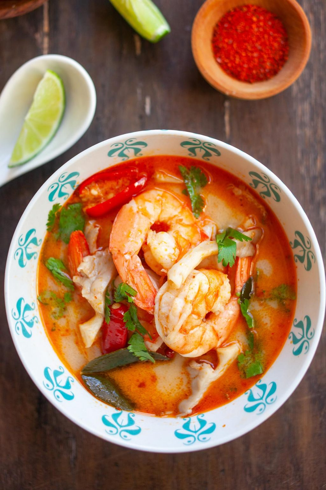

Tom Yum

The end product of Tomyum
Ingredients
- 12 oz. shrimp
- 2 1/2 cups shrimp stock
- 1 stalk lemongrass
- 3 slices galangal
- 6 kaffir lime leaves
- 6 bird's eyes chilies
- 6 fresh oyster mushrooms
- 2 tablespoons nam prik pao
- 2 tablespoons nam prik pao oil
- 3 teaspoons fish sauce
- 3 1/2 tablespoons lime juice
- Cilantro leaves (for garnishing)
Steps
- Peel the shell and head off the shrimp, keep the tails on. Save the shell and shrimp head. Devein the shrimp and set aside
- In a pot, bring 3 cups of water to boil. Add the shrimp head and shell to make shrimp stock. Boil until the water turns slightly orange in color.
Press the shrimp heads with a spatula to extract the juice from the heads.
- Simmer and let the stock reduce to 2 1/2 cups. Drain the shrimp stock and discard the shrimp heads and shells.
- Turn the heat to high and add the lemongrass, galangal, kaffir lime leaves, bird's eye chilies, mushroom, nam prik pao and nam prik pao oil to the shrimp stock.
Bring it to boil.
- Add in the shrimp and fish sauce. Lastly, add the lime juice (if you add lime juice too early, the soup might turn bitter).
Boil until the shrimps are cooked, dish out, and garnish with cilantro leaves. Serve immediately.